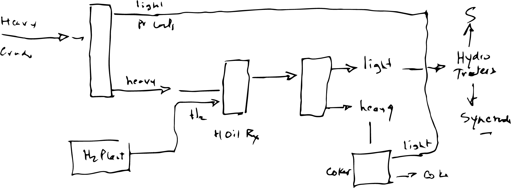
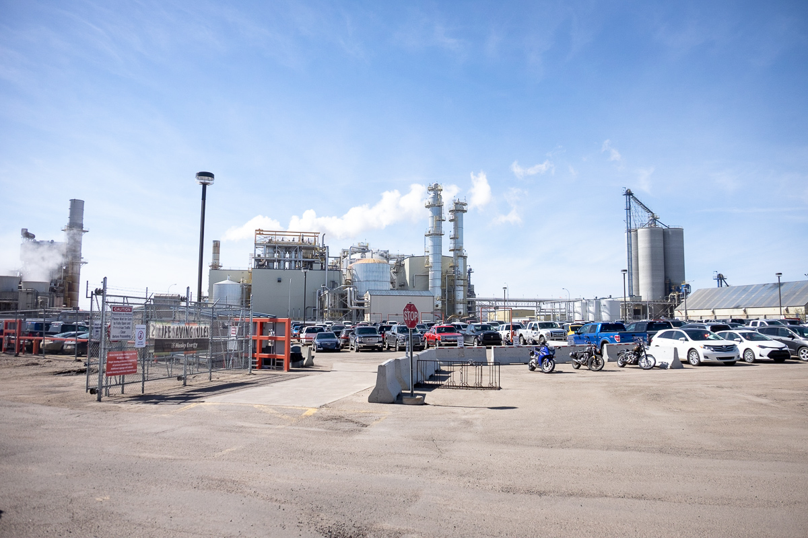
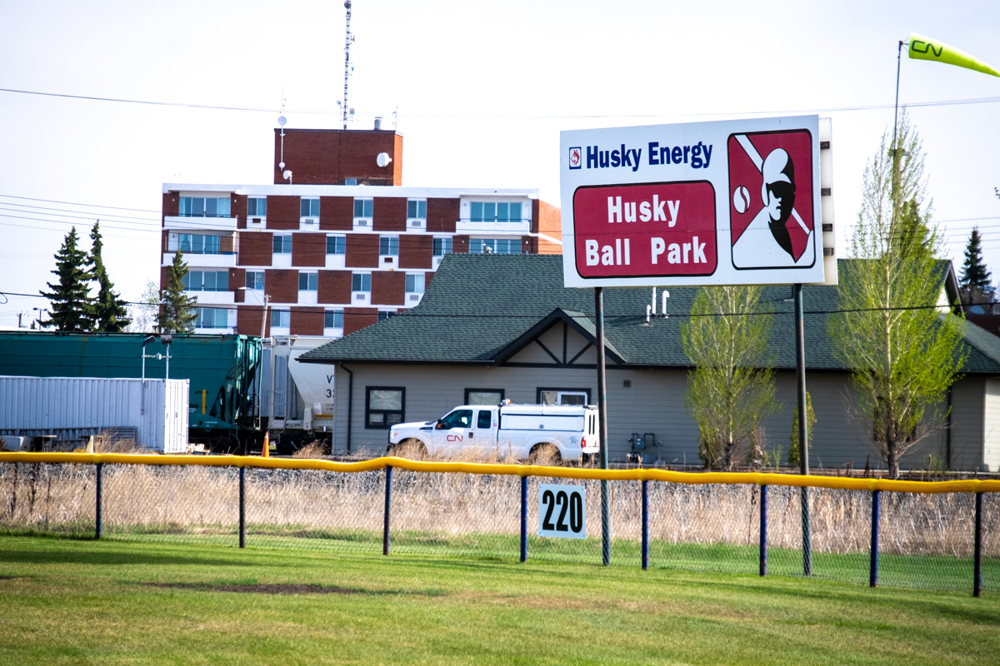
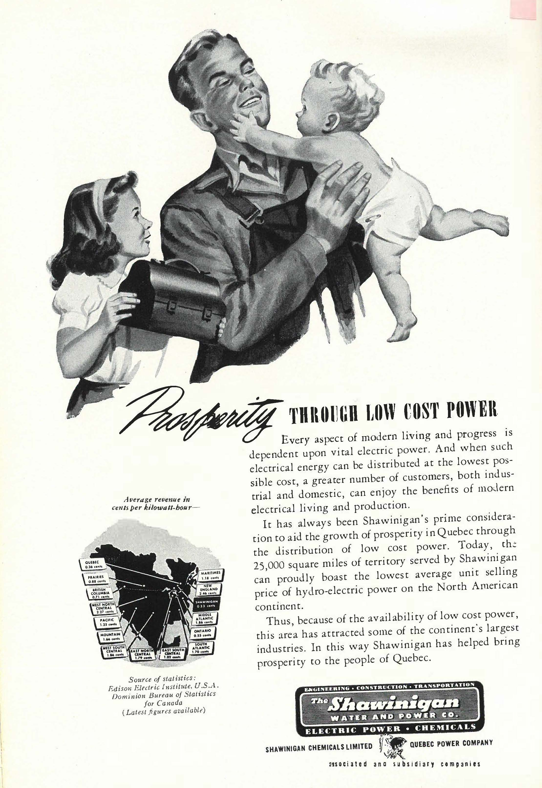
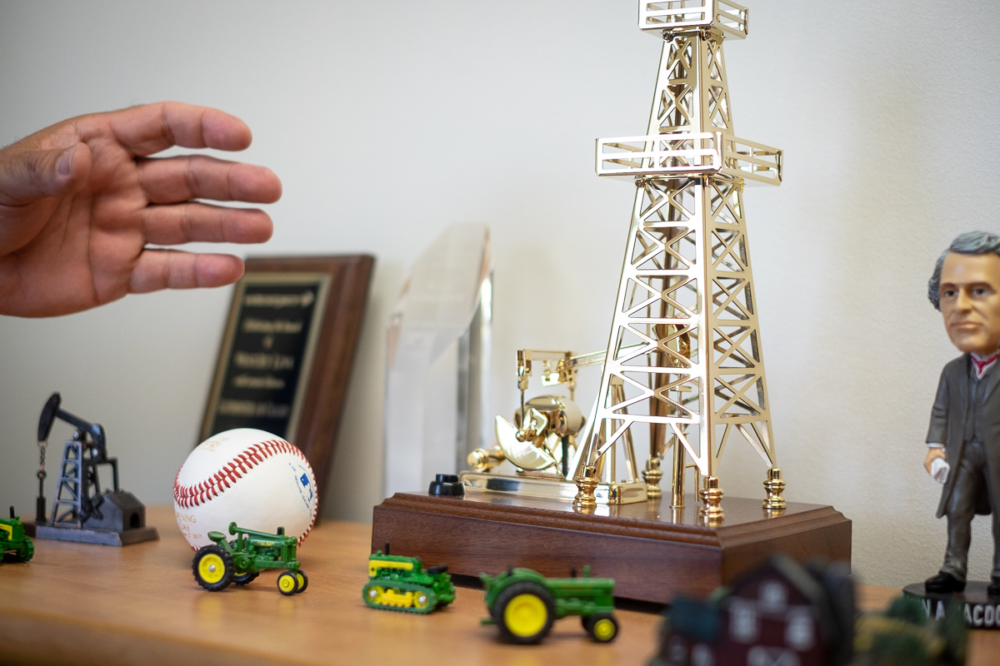
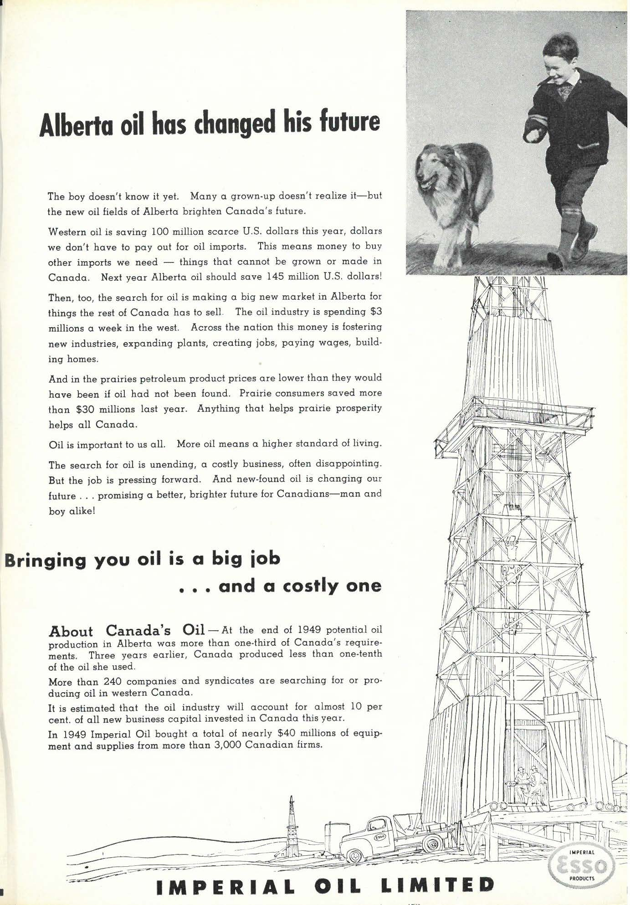
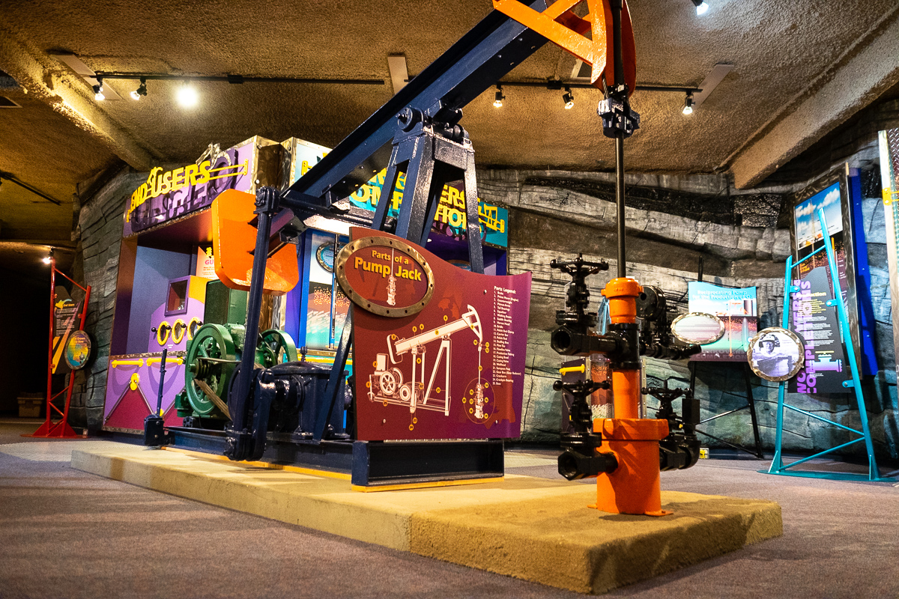

II. Lloydminster
The Heavy Oil Science Centre is a long way away from Montréal, both physically and metaphorically. It’s a 3,300 kilometre drive through the Canadian Shield and snowy Manitoba’s dry cold before reaching the dusty prairie city of Lloydminster on the border between Alberta and Saskatchewan.
Few places represent the distance between anti-oil protesters and the reality of Canada’s energy dependence better than this place. It sits on the Saskatchewan side of Highway 17, a road that runs through the middle of town and serves as the provincial border (there is a quiet agreement to keep the Alberta clock, regardless of which side of the road you’re on, making GPS-based cell phone clocks a constant frustration for visitors).
For residents, the colourful exhibits are a point of pride. For out-of-towners living in Canada’s major urban centres, there is no better place to learn about the city’s history processing heavy oil. It’s also a popular field trip among the schoolchildren of Lloydminster, for which it’s easy to see the exhibit’s appeal. The roughly circular room of exhibits and activities follows Squirt, an anthropomorphic drop of oil grinning behind sunglasses, as it introduces games and explains the history and science of heavy oil in the region.
Heavy oil is a critical cornerstone of Lloydminster’s economy. In the city – simply called “Lloyd” by locals – fortunes live and die with the boom and bust of the oil economy, like many prairie towns that are intimately connected to the fossil fuel industry. It is a case study of Canada’s reliance on fossil fuels, and residents of the town have summoned angry politicians to push for a pipeline they believe is critical to restoring Lloydminster — and Alberta — to its former glory.
Vic Juba stands in the Heavy Oil Science Centre, which he helped to produce. Dexter McMillan/May 17, 2019
Heavy Oil in Our Veins
Vic Juba, known around town as “Mr. Lloydminster,” is a big-time oil man in this big-time oil town and his industry resumé is thicker than Lloydminster crude. Juba spent his entire career at Husky. His reputation has earned him over half a dozen awards for public service and a monument in the southwest of the city: the Vic Juba Community Theatre.
Tourism documents list Lloydminster as the “Heavy Oil Capital of the World." It sits just south of the Cold Lake oil sands and boasts its own heavy oil deposits. But refining heavy oil into more useful products is how Lloydminster truly made its name.
Heavy oil is not the same as other kinds of petroleum. It’s difficult to pull out of the ground, for starters, and needs to be heavily refined before being useful.
Because it is relatively more costly to extract and process heavy oil, the world’s interest has been primarily on conventional oil reserves with a lower viscosity. But interest in heavy oil is peaking as conventional oil reserves in the Middle East and elsewhere dwindle.
“I was the first manager of the upgrader here,” says Darrell Howell, a resident of Lloydminster for nearly three decades. “Basically, heavy oil has too much carbon, and not enough hydrogen.”

The process that Howell made his living understanding: converting heavy oil into more useful products. Darrell Howell/May 17, 2019
Howell’s explanation reflects his specialization as an engineer. He explains that Husky’s refinery, built in 1946, essentially unlocked the heavy oil reserves in the surrounding area for use by introducing hydrogen into the oil and turning it into a more useful product. Lloydminster refines heavy oil from all over Alberta and turns it into construction products like asphalt.
“The asphalt quality is basically the best in the world,” boasts Juba.
Juba began his career at Husky in 1953 as a technician in the lab. He says at the time, Husky and other oil companies in Canada were struggling to unlock the potential in heavy crude. Getting it to flow through pipelines was the hardest part.
“It was quite an experience to try and determine how much dilatant we have to put in to make it as viscous as possible so it will flow,” said Juba, “not make it 100 miles and then stop dead because of too much friction."

The Husky upgrader in Lloydminster is hard to miss. It's just off the highway that brings you through town. Dexter McMillan/May 17, 2019
The Husky Oil Upgrader, built in 1992 to further process the heavy crude found in the Lloydminster area before shipping to other parts of North America, is a major employer in Lloydminster, providing 800 jobs. The upgrader takes heavy crude oil from the surrounding area and processes 29,000 barrels a day into asphalt and other oil products.
In 1988, Juba moved from a technical role to be Husky’s community liaison, a role of particular importance given the intimate role Husky has in the community. The company leases approximately 2 million acres of land in the Lloydminster area, making them the largest operator in the area. It makes regular contributions to community spaces like parks and recreational facilities in Lloydminster.

Husky donates money to build community spaces like this baseball field. Dexter McMillan/May 17, 2019
Husky’s scope 1 emissions (scope 1 emissions are from activities that are directly under the control of the company) are listed as 10.2 million metric tons of CO2 equivalent (CO2 equivalent is a measurement that standardizes emissions of all greenhouse gases – methane and chlorofluorocarbons for instance – as CO2 for comparison). The Lloydminster upgrader is responsible for 10.6 per cent of those emissions. It is the third most heavy producer of GHGs of all Husky facilities.
Lloydminster is a city of just over 31,000, but it is difficult to stop the word “town” from running off the tip of your tongue when you describe it. The oil industry workers seem tightly connected. There’s a sense of community in every corner, from the Husky-sponsored baseball diamond to the community centre slash Heavy Oil Science Centre slash parking lot farmer’s market.
Lloydminster, like other towns and cities in Alberta that sprang up to support oil workers in the 20th century, has an up-and-down economic history.
Corine Price grew up close to Lloydminster before moving away to attend university. She came back to Lloydminster as the town’s archivist in the early 1990s. In the archive room – another of the many civic institutions that co-exist in the same building as the Heavy Oil Science Centre – she sits surrounded by boxes, papers and books, sipping tea with another resident who volunteers with her.
“It seemed to me like the city was always growing,” says Price about Lloydminster in the early 2000s. “I remember as a kid, Lloyd wasn’t a city but more like a big town. Now it seems like more of a fast-moving, urban centre."
She said that in 2015, it all started to change.
“That’s when people stopped spending money so frivolously on toys,” she says. “There were a lot of layoffs in the oil field. We started seeing a lot of housing foreclosures and businesses closing."
“We were finding mental health issues were very prevalent,” said Juba about the city’s tougher times. “I remember this one lady I talked to. She said that the best she could do was an appointment in six month’s time. I said, ‘I got a problem today, not six months from now.’”
Alberta’s unemployment rate has always fluctuated in line with the price of oil. In December 2018, Alberta’s unemployment was 6.4 per cent. A year later, it was 7 per cent. Unemployment peaked in Alberta last decade at a stunning 9.1 per cent in November 2016. Unemployment in Canada was seven per cent at the same time.
“It seems like the only thing I remember is having drought,” said Price of her childhood. “That's kind of my early, early memories of the economy.”

An energy advertisement in an issue of Canadian Geographic. [Image courtesy of Canadian Geographic]
Unemployment spiked to record levels in Alberta during the 1980s, when the price of oil crashed and at one point, left 12.8 per cent of Albertans out of work and looking for jobs.
Today, on the outskirts of Lloydminster brand new developments languish, half-finished in the dusty prairie grass. Many of the newer parts of the city began construction in 2013 at a time when oil had recovered from the 2008 recession and climbed to over $100 USD/barrel, fuelling development and creating jobs in the city. But by January 2015, the price of oil had plummeted almost to $52 USD/barrel, stalling out the economy.
But during lean times like this, Price says austerity becomes as intimately connected to the city as heavy oil.
“You feel it everywhere."
Without question, Husky is having trouble in Alberta. The price of Lloydminster crude is still just under $60 USD/barrel. Husky’s report cites “continued transportation constraints” as the cause of declining prices for Lloydminster crude.
Shortly after the 2019 federal election, Husky laid off almost 400 workers in their Calgary office, citing Alberta’s oil curtailment policies as the reason. Oil curtailment is the process of limiting production – in this case, 10 per cent in order to increase the price of Alberta’s crude oil. The practice would be unnecessary if prices were buoyed by shipping their oil to a global market.
In plain language: they need a pipeline.
Gerald Aalbers has been the mayor of Lloydminster since 2016. Dexter McMillan/May 16, 2019
Hard Times in Lloyd
Mayor Gerald Aalbers sits behind a frosted glass door in Lloydminster’s city hall building, tucked just into the Alberta side of the provincial border. He sits in a corner of his office next to a shelf of trinkets: A golden oil derrick that bobs up and down to music when you hit a button, a Sir John A. MacDonald bobblehead and a souvenir baseball.
He is a jovial man with the beaming smile of a politician. He’s crystal clear about why he ran for mayor of Lloydminster in 2016: “I was angry."
Like many conversations in Lloydminster, the spectre of the 1980s forces itself into our conversation. In this particular discussion, Aalbers is describing how a Husky refinery expansion project saved Lloydminster from that decade’s recession.
“The new technology increased [production] by four fold,” he says with some measure of pride. “The people that were on unemployment now have worked 365 days of the year,” he said. “Our unemployment rate dropped dramatically.”

Several trinkets sit on a shelf in the corner of Mayor Gerald Aalbers's office. Dexter McMillan/May 16, 2019
A 2017 report on the state of the Alberta economy paints a bleak picture of cities like Lloydminster.
“The recession has left deep scars, particularly in the energy sector and across the labour market,” reads the report. “These will be slow to heal.”
Aalbers describes the need for a pipeline project like the Trans Mountain expansion.
“A pipeline is the safest methodology we have today to move oil,” says Aalbers. “When you look at a railroad, and you see those tanker cars going down, if that was a continuous pipe in the ground, going 24 hours a day, seven days a week, 365 days a year, you would move astronomical amounts of volume, and not bother anyone on the surface.”
“Right now there's no guarantee [for oil companies] that they'll make return because they can't sell their product. And if you can't sell your product…we've really created a roadblock in the system.”

An oil advertisement in an issue of Canadian Geographic. [Image courtesy of Canadian Geographic]
I met Aalbers shortly after Alberta’s provincial election. The United Conservative Party's Jason Kenney swept the NDP out of Alberta legislature in April 2019 on fighting words about bringing back jobs in oil and gas.
Oil and gas lifers like Howell says the “ridiculous situation around pipelines” currently ongoing in Canada is one of messaging.
“I think we really have lost the public relations war at this point,” said Howell.
Almost immediately, Kenney announced an investment of $30 million into an "energy war room” to win the PR war Howell claims the industry has already lost. The Canadian Energy Centre, as it’s called, is staffed by policy analysts and journalists writing stories to “help raise understanding of the Canadian energy sector’s value to this country and the world, through the sharing of knowledge, facts and ideas.”
(Already, the initiative has come under fire for improper journalistic practice and copyright infringement.)

The Heavy Oil Science Centre is a place dedicated to teaching residents and tourists to Lloydminster about the history of crude oil in the region. Dexter McMillan/May 17, 2019
Lloydminster is like many other towns and cities across Alberta. Corporations like Husky solved energy problems of the 20th century for Canadians and people around the world and Canadians have benefitted from these solutions. But the world is moving on from fossil fuels, and many of the people there can’t help but feel left behind with it.
“We're in a tough spot and we need help from the federal government,” says Howell, “Albertans feel like they've turned their backs on us.”
But Squirt wants visitors to the Heavy Oil Science Centre to understand the importance of the fossil fuel industry to Albertans and Canadians alike.
“People used to call me a problem. A disappointment. They even called me crude,” reads a sign introducing the drop of oil, who looks like he thinks he could be cooler than you. “But now with all the people helping me, and the Upgrader where I can go to learn to be ‘refined,’ my friends say I’m very important.”